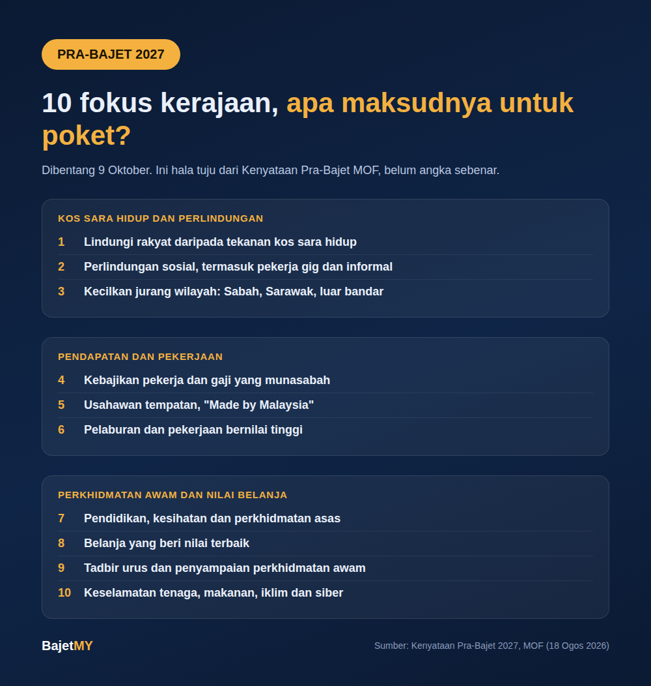

Bajet 2027 dibentang pada 9 Oktober 2026. Pada 18 Ogos 2026, Kementerian Kewangan (MOF) menerbitkan Kenyataan Pra-Bajet yang menyenaraikan 10 fokus bajet tersebut.
Ini hala tuju, bukan pengumuman langkah sebenar. Angka, kelayakan dan tarikh hanya diketahui semasa pembentangan. Tapi senarai ini beri petunjuk apa kerajaan nak tekankan, jadi kami kumpulkan ikut kesannya kepada isi rumah.

A. Kos sara hidup dan perlindungan
- Melindungi rakyat daripada tekanan kos sara hidup. MOF menyebut penilaian menyeluruh kos isi rumah: makanan, perumahan, pengangkutan, kesihatan, pendidikan dan penjagaan anak, melalui subsidi dan bantuan bersasar.
- Memperkukuh perlindungan sosial. Liputan dilanjutkan kepada pekerja informal dan gig, dan persediaan untuk masyarakat yang menua (dianggar 15% berumur 60 tahun ke atas menjelang 2030).
- Keadilan sosial dan pembangunan untuk semua. Mengecilkan jurang wilayah, dengan penekanan kepada Sabah, Sarawak dan luar bandar.
B. Pendapatan dan pekerjaan
- Kebajikan pekerja dan gaji yang munasabah. Termasuk sasaran penyertaan tenaga kerja wanita 60% dan mengurangkan kebergantungan kepada buruh asing berkemahiran rendah melalui automasi.
- Usahawan tempatan dan "Made by Malaysia". Sokongan PKS melalui pembiayaan, teknologi dan akses pasaran.
- Pertumbuhan melalui pelaburan dan pekerjaan bernilai tinggi. Semikonduktor, AI, perkhidmatan digital dan peralihan tenaga.
C. Perkhidmatan awam dan nilai belanja
- Pendidikan, kesihatan dan perkhidmatan asas. Literasi, numerasi, TVET, STEM dan akses penjagaan kesihatan yang mampu milik.
- Belanja yang beri nilai terbaik. Pemantauan berasaskan hasil, supaya setiap ringgit memberi pulangan kepada rakyat.
- Tadbir urus dan penyampaian perkhidmatan awam. GovTech, identiti digital dan penerbitan petunjuk prestasi untuk penilaian umum.
- Keselamatan tenaga, makanan, iklim dan siber. Peralihan tenaga bersih dan daya tahan terhadap kejutan geopolitik dan iklim.
Apa maksudnya untuk korang?
- Kos sara hidup di tempat pertama. Fokus 1 menyebut "subsidi dan bantuan bersasar". Maksudnya kelayakan kemungkinan besar bergantung pada pendapatan isi rumah, jadi penting tahu kumpulan sendiri (B40, M40 atau T20).
- Pekerja gig dan informal disebut. Kalau korang kerja sendiri atau buat kerja gig, fokus 2 patut diperhatikan.
- "Bersasar" bukan automatik untuk semua. Bantuan yang ditumpukan kepada kumpulan tertentu bermaksud sebahagian orang mungkin dapat kurang atau tiada. Itu pertukaran yang kerajaan buat untuk jimat belanja.
- Tiada angka lagi. Tiada jumlah bantuan, kadar cukai atau pelepasan dalam senarai ini. Jangan percaya mesej yang dakwa tahu angka sebelum 9 Oktober.
Apa korang boleh buat sekarang
- Semak kumpulan pendapatan isi rumah dengan kalkulator Kumpulan Pendapatan Bajet MY. Banyak bantuan guna B40/M40/T20 sebagai syarat.
- Kira belanja bulanan sendiri. Bila bantuan diumumkan, korang tahu berapa besar bezanya pada bajet korang.
- Hati-hati dengan mesej palsu. Musim bajet selalu ada pautan "daftar bantuan Bajet 2027" yang palsu. Semak hanya melalui laman rasmi kerajaan.
Kami akan kongsi ringkasan apa yang diumumkan selepas 9 Oktober.
Sumber
- Kementerian Kewangan Malaysia, Kenyataan Pra-Bajet 2027 (18 Ogos 2026)